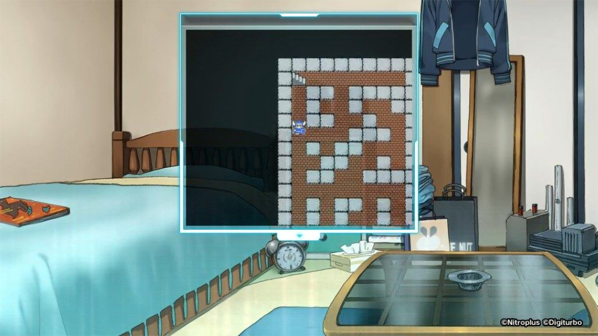
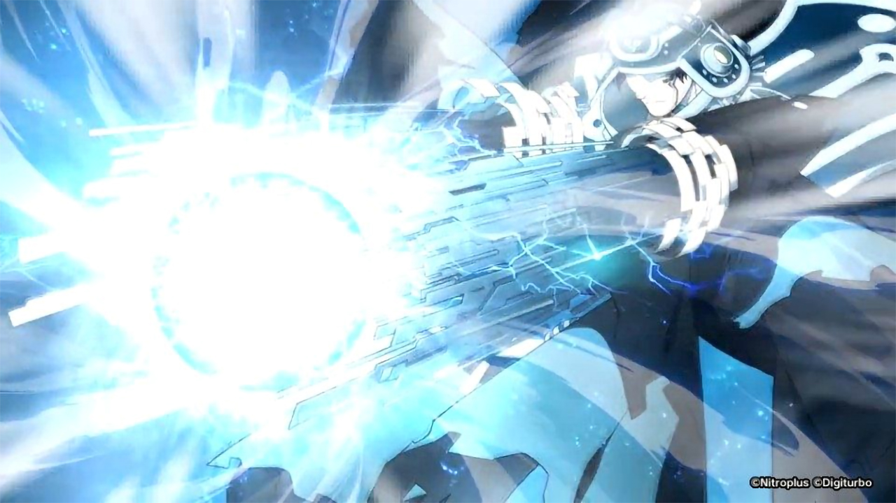
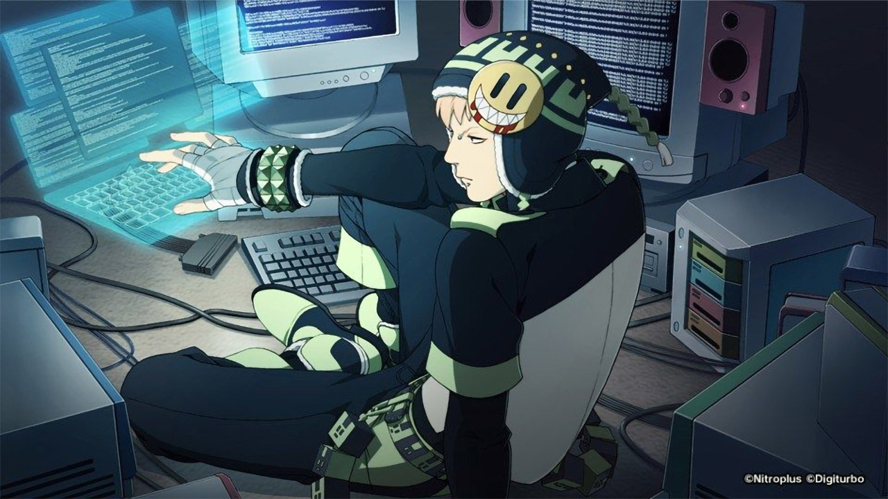
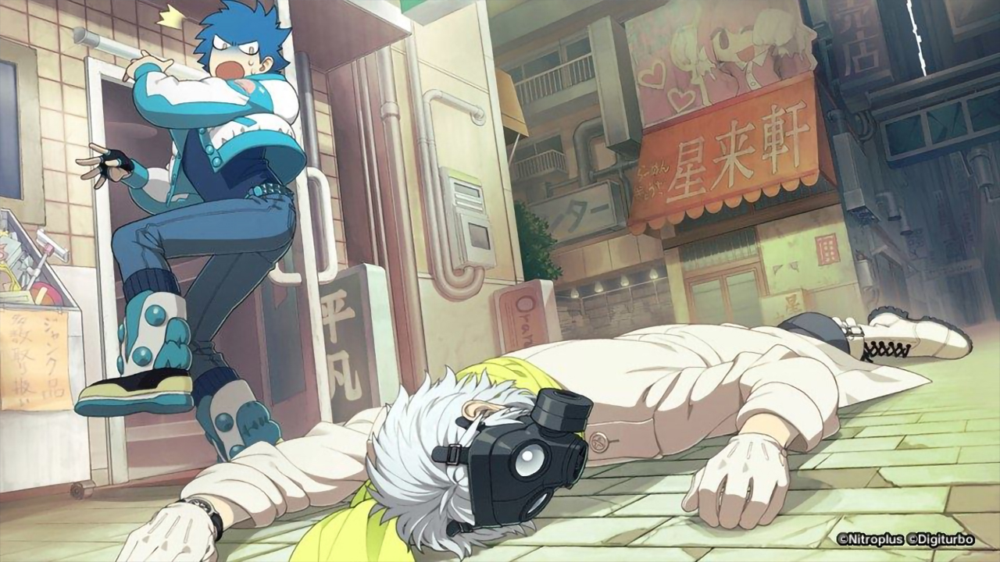
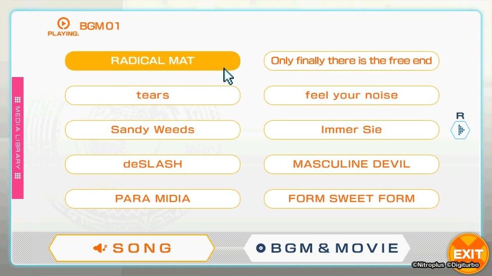
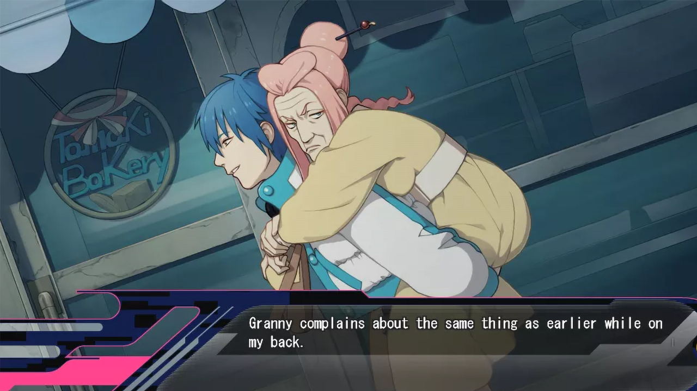
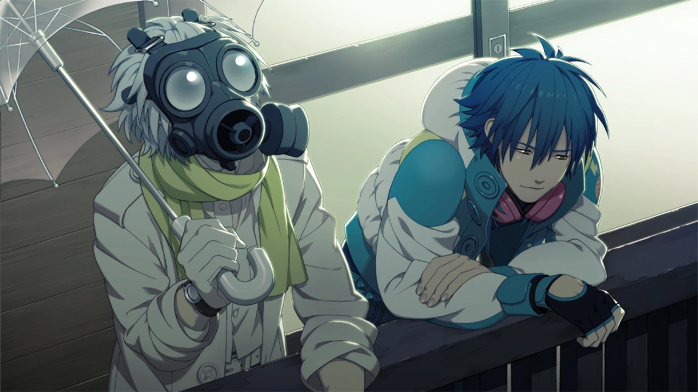

DRAMAtical Murder
Release Date:
March 23, 2012
Developer:
Translator
Genres:
Sci-Fi
Novel Length:
Anime Adaptation:
Prequel:
None
Sequel:
None


Reviews
"All in all, I am a fan of the cyber punk type feel and the character designs. It does have a great story too, once you get around the sexual stuff."
"I loved this game, I finished playing it a week ago and i'm still pretty overwhelmed with everything that happened ..."
"The game is Snow Crash with a Lisa Frank meets Vocaloid aesthetic, set to a catchy/corny synth-pop soundtrack. The interface is bubblegum pop, but not overly garish, with neat retro effects when the story calls for it. The character portraits and scenes are dynamic and beautifully painted, and the character designs are uniquely attractive and color-coded, even given their nonsensical fashion sense."
About This Novel
A time far in the future. In Midorijima, an island to the southwest of the Japanese islands. People and nature once coexisted on this plentiful island.
However, due to being purchased by the leading company of Japan "Toue Company", one third of the island has been changed into the extravagant amusement facility "Platinum Jail". Equipped with the latest cutting edge technology, Platinum Jail has gathered attention. On the other side, the islanders who became victims of forceful development are forced into the "Former Residents District", and have no choice but to carry out their lives in a place that is by no means prosperous.
The protagonist Aoba spends his days working part-time at the junk shop "Heibon" inside the Former Residents District, living together with his grandmother Tae.
Among the young people of the Former Residents District, a certain game has become popular. In "Liebstiez", teams are created and days of human-bullet turf wars unfold. On the other hand, "Rhyme" is an electronic brain online game using a virtual world as its setting which "Rhymers" are going crazy over. Aoba shows no interest in either one, thinking that it would be nice to just live peacefully with his grandmother.
But the disaster that will shake up those peaceful days has already begun...
(From VNDB)
Technical Details
Platforms:
Windows
Resolution:
16:9
English:
Animated Scenes:
None
Voiced:
Fully
You Might Also Like


Get It Now

Recommended
Get It